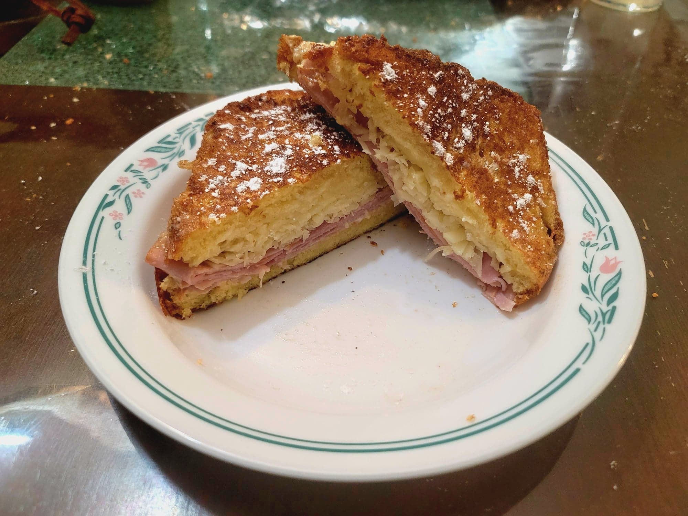

Monte Cristo

Ingredients:
- 4 slices Brioche
- Mayonnaise
- Dijon Mustard
- 12 thin slices Smoked ham
- 8 oz Gruyère cheese, grated
- 2 tbsp Butter
- 2 Eggs
- 1/2 cup Milk
- Optional: Salt, to taste
- Optional: Pepper, to taste
- Powdered sugar
- Optional: Raspberry preserves
Instructions:
- Spread some mayonnaise on one side of each of the 4 slices of brioche. Then spread some mustard on 2 of the slices, over the mayonnaise. Evenly layer the smoked ham and then the grated cheese onto the slices with the mustard, and then top it with the other slices of brioche.
- Whisk together the eggs, milk, salt, and pepper into a shallow plate or bowl.
- Begin to heat a pan over medium-low and add in the butter. While the butter melts, carefully place each sandwich into the egg mixture, completely coating each side. Place the sandwiches onto the pan and cook for about 3-4 minutes per side, or until nicely golden. Then transfer to plates.
- Dust the sandwiches with powdered sugar. Cut the sandwiches diagonally and serve hot with raspberry preserves for dipping.